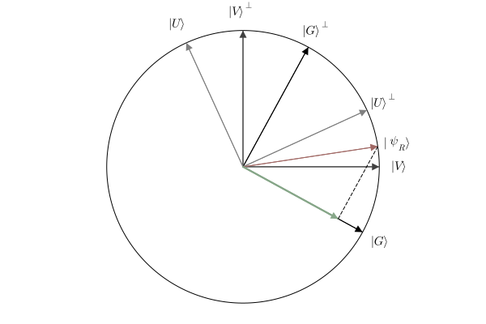

using LaTeXStrings
using QuantumEpisodicMemory
using Plots
- Gist basis: $\boldsymbol{\chi}_G = \{ \ket{G}, \ket{G}^{\perp} \}$
- Verbatim basis: $\boldsymbol{\chi}_V = \{ \ket{V}, \ket{V}^{\perp} \}$
- New Related basis: $\boldsymbol{\chi}_N = \{ \ket{N}, \ket{N}^{\perp} \}$
- Old state vector: $\ket{\psi_O}$
- New related state vector: $\ket{\psi_R}$
- New unrelated state vector: $\ket{\psi_U}$
- $\theta_G$:
- $\theta_U$:
- $\theta_{\psi_O}$:
- $\theta_{\psi_R}$:
- $\theta_{\psi_U}$:
θG = -.5
θU = 2
θψO = .90
θψR = .15
θψU = -1.5
-1.5
dist = GQEM(; θG, θU, θψO, θψR, θψU)
GQEM
┌───────────┬───────┐
│ Parameter │ Value │
├───────────┼───────┤
│ θG │ -0.50 │
│ θU │ 2.00 │
│ θψO │ 0.90 │
│ θψR │ 0.15 │
│ θψU │ -1.50 │
└───────────┴───────┘
plot(dist, θψR, θG; state_label = L"\psi_R")
